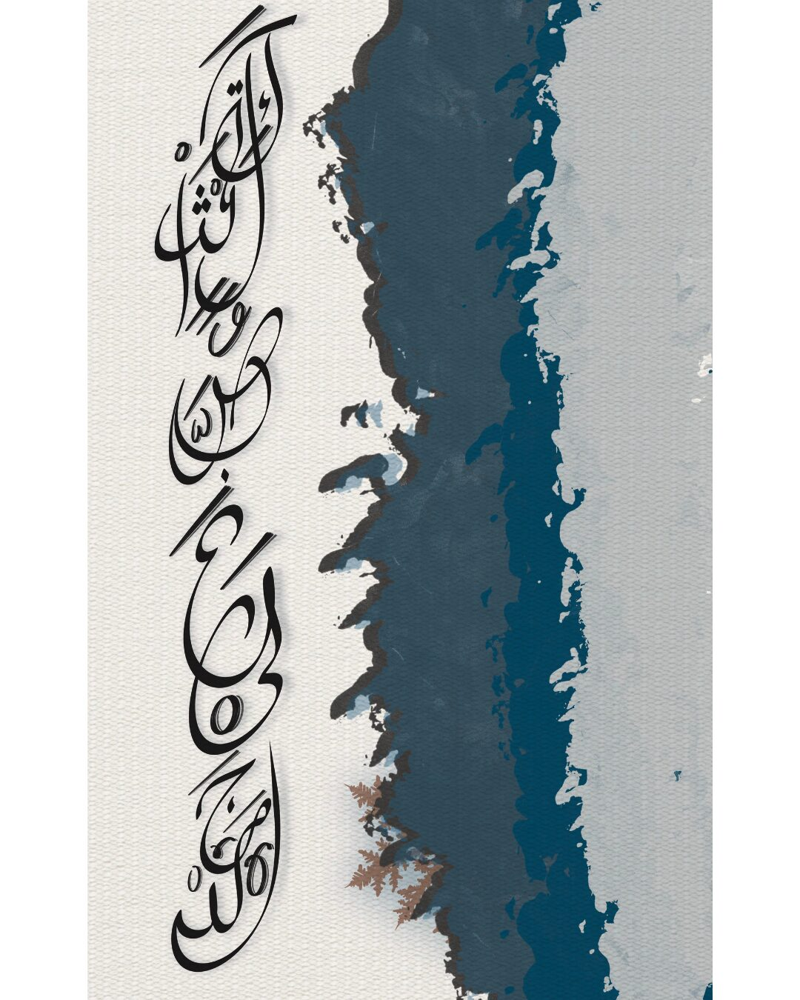
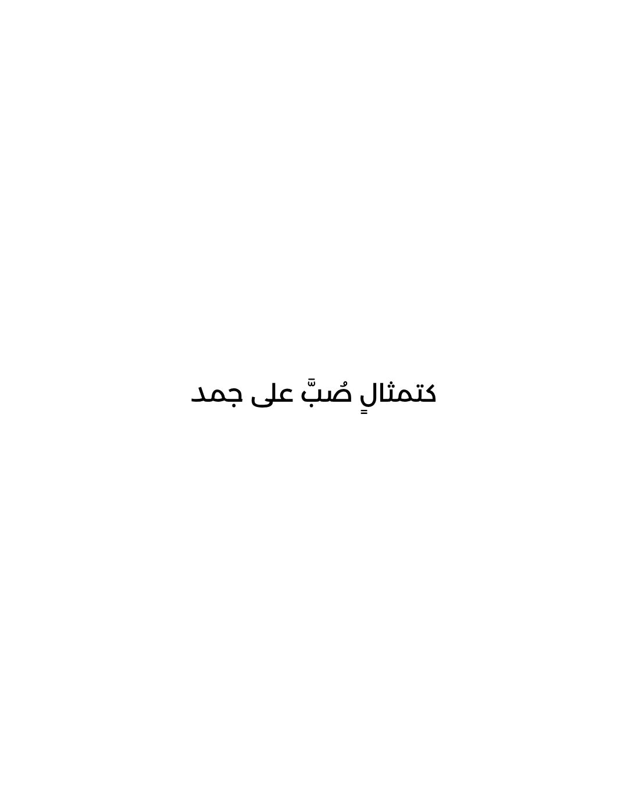
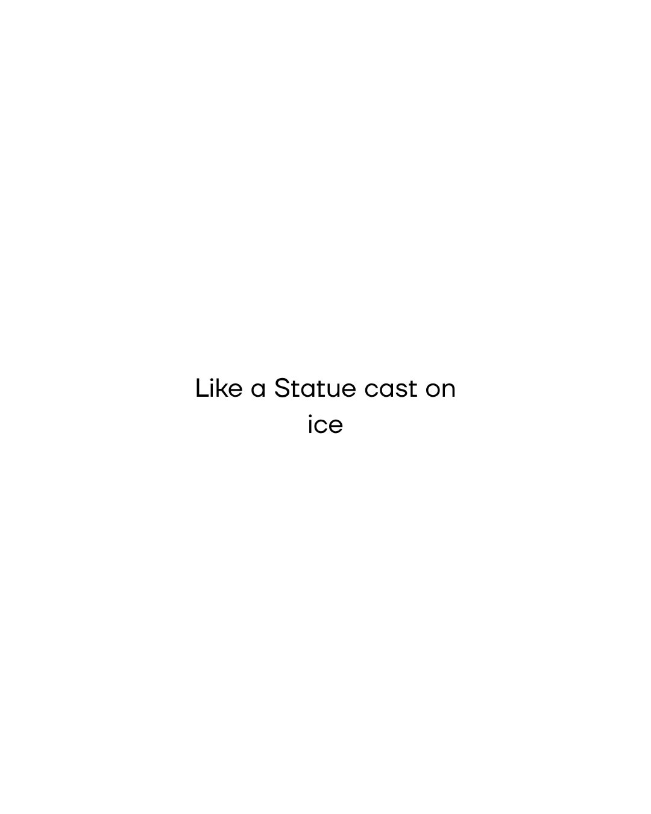
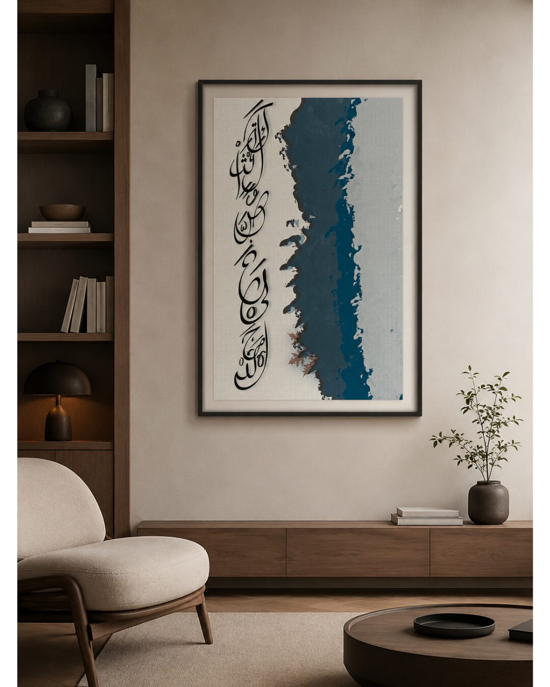
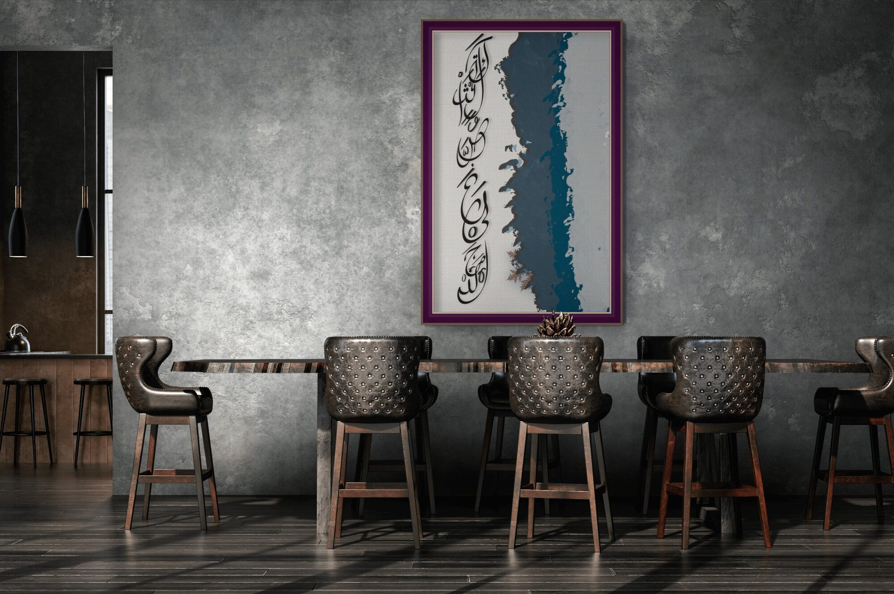

كَتِمْثالٍ صُبَّ عَلى جَمَد
Like a statue cast over ice.
النحّات · The Sculptor

There is a kind of composure that is not peace — that is damage made presentable. This line comes from a poem of return: come back, it says, I won't ask for anything. I won't mention what is stirring. I will give back every loss you left with me. I will be cold. The coldness here is not indifference. It is what the person has decided to become — a statue, a thing shaped and hardened and fixed, poured over ice so that it holds its form no matter what comes next.
The calligraphy descends the page in a vertical cascade, as if it is itself being poured — heavy, unhurried, black ink on bare linen. Beside it, a deep teal wash cuts through the composition: cold, waterlogged, dissolving at the edges. The two halves do not meet cleanly. At the base, rust-coloured leaves have settled — the poem's closing image made visible, a garden whose wounds dried up and no longer water the roses. The composition is divided, and stays divided.




Ask about النحّات
Editions are small and made after the conversation. Tell me the format you have in mind and the wall it is going to.
Enquire about this work